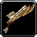
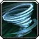
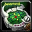
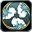
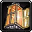
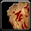
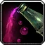

In brief
12 WoW Forever toys (toy table of the game files) with the game icon, official French and English name and acquisition when known (8).[3] Game data (client 1.60.1.70862)
Key points
How to read this list
French and English names, quality, faction, required level, price and effect come from the game files (client 1.60.1.70862). “Official” acquisition comes from the cited Blizzard articles. Quests, NPCs and zones come from game quest data completed by players: they remain to be confirmed. When the game files do not say how to get an entry, the card says so (“not given”): nothing is added from memory or from another version of the game. A price recorded in the game files does not prove that a vendor sells it in Forever, and the presence of an entry in those files does not prove it can be obtained in Forever.[3][4] Unconfirmed — to be confirmed
Each card shows the item’s official icon, read from the WoW Forever game files (client 1.60.1.70862) and only converted to WebP, unretouched (game images © Blizzard Entertainment). When no game image exists for an entry, no image is shown.[3] Game data (client 1.60.1.70862)
By acquisition
| Group | Toys |
|---|---|
| Legacy | 1 |
| Shop pack | 1 |
| Crafting | 4 |
| Quest rewards | 2 |
| Acquisition not given | 4 |
Legacy — 1
Launch Legacy reward (official); in the game files the toy is named “Holstered Replica Ironforge Air Rifle”.[1][3]

Holstered Replica Ironforge Air Rifle
Réplique de carabine à air comprimé de Forgefer dans son étui
- How to get it
- Launch Legacy reward (named “Replica Ironforge Air Rifle” by Blizzard): Legacy points earned across the account (threshold not published)
Reward of the quest “Legacy Reward: Replica Ironforge Air Rifle” - Zone
- not given
- NPC
- not given
- Effect
- Unholster your Replica Ironforge Air Rifle for a friendly shootout.
- Reference
- item #276236
Shop pack — 1
Toy included in the Skyborne packs (official).[2][3]

Shen'dorei Windwell
Puits de vent shen’dorei
- How to get it
- Skyborne Heroic Pack (also in the Skyborne Epic Pack and the Warcraft Forever Collection)
- Zone
- not given
- NPC
- not given
- Price
- 200 g (price recorded in the game files)
- Reference
- item #280740
Crafting — 4
Toys made with Engineering: recipe read from the game files (required skill level not given).[3] Game data (client 1.60.1.70862)

World Enlarger
Agrandisseur de monde
- How to get it
- Crafted: Engineering — recipe “World Enlarger”
- Zone
- not given
- NPC
- not given
- Price
- 3 g (price recorded in the game files)
- Requires
- Engineering (250)
- Reference
- item #18660

Steam Tonk Controller
Commande de chariotte à vapeur
- How to get it
- Crafted: Engineering — recipe “Steam Tonk Controller”
- Zone
- not given
- NPC
- not given
- Price
- 2 g (price recorded in the game files)
- Effect
- Summon and control your steam tonk.
- Reference
- item #22728

Snowmaster 9000
Maître-neige 9000
- How to get it
- Crafted: Engineering — recipe “Snowmaster 9000”
- Zone
- not given
- NPC
- not given
- Price
- 3 g (price recorded in the game files)
- Requires
- Engineering (190)
- Effect
- Allows an experienced engineer to turn water into a snowball. The Snowmaster requires a day to build up enough chill to freeze another snowball.
- Reference
- item #17716

Centaur Banner Deployment Device
Dispositif de déploiement de bannière centaure
- How to get it
- Crafted: Engineering — recipe “Centaur Banner Deployment Device”
- Zone
- not given
- NPC
- not given
- Price
- 25 s (price recorded in the game files)
- Reference
- item #269900
Quest rewards — 2
Toys given by a quest (seasonal festivals, Ashenvale). Quest data, to be confirmed.[3][4] Unconfirmed — to be confirmed

Replica Dartol's Rod of Transformation
Réplique de bâtonnet de transformation de Dartol
- How to get it
- Reward of the quest “Raene's Cleansing” (level 30) — Alliance
- Zone
- Ashenvale
- NPC
- Krolg (Ashenvale 50.8, 75.1)
- Reference
- item #276242

Elune's Lantern
Lanterne d'Elune
- How to get it
- Reward of the quest “Elune's Blessing” (level 60)
- Zone
- Moonglade
- NPC
- Valadar Starsong (Moonglade 53.7, 35.3)
- Effect
- Create an Elune Stone. Requires a Solid Stone.
- Reference
- item #21540
Acquisition not given — 4
Toys present in the game files; their acquisition is not given there.[3] Game data (client 1.60.1.70862)

Traveler's Symbols
Symboles de voyage
- How to get it
- Not given in the game files
- Zone
- not given
- NPC
- not given
- Price
- 1 g 84 s 75 c (price recorded in the game files)
- Effect
- Place a Traveler's Sign that lasts for 1 min. A message can be written on the sign, causing it to last for 1 hour and making it visible to other players.
- Reference
- item #221315

Dwarven Tradeskill Signpost
Panneau d’artisanat nain
- How to get it
- Not given in the game files
- Zone
- not given
- NPC
- not given
- Reference
- item #270868

Orcish Tradeskill Signpost
Panneau d’artisanat orc
- How to get it
- Not given in the game files
- Zone
- not given
- NPC
- not given
- Reference
- item #270870

Everlasting Silvermoon Shimmerwine
Vin chatoyant de Lune-d’Argent éternel
- How to get it
- Not given in the game files
- Zone
- not given
- NPC
- not given
- Price
- 2 g 50 s (price recorded in the game files)
- Effect
- Pour a glass of Silvermoon Shimmerwine.
- Reference
- item #276896
Correction history
17 November 2026 (v41, published with v42): cards illustrated with game icons, grouped by acquisition; official French names and prices taken from the game files (client 1.60.1.70862); quests and NPCs from quest data, to be confirmed. Replaces the former table.[3] Game data (client 1.60.1.70862)
What is confirmed / what remains to be confirmed
Key dates
Sources
- [1] Get to Know the World of Warcraft: Forever Legacy System (EN) · published · accessed
Découvrez le système d’héritage de World of Warcraft: Forever (FR) · published · accessed - [2] Purchase World of Warcraft: Forever Upgrades and Begin Your Next Journey in Azeroth (EN) · published · accessed
Achetez les avantages de World of Warcraft: Forever et lancez-vous dans vos prochaines aventures sur Azeroth (FR) · published · accessed - [3] WoW Forever client files, build 1.60.1.70862 — data tables and icons read from Blizzard’s official CDN (EN) · no publication date shown · accessed Game data — client 1.60.1.70862
- [4] Quest data JSON (Forever game data 1.60.1, partly completed by player-addon contributions; 64 files consulted) (EN) · no publication date shown · accessed Non-official source — unconfirmed
Official Blizzard Entertainment sources (all rights reserved). This wiki offers an original synthesis; only short quotes are reproduced. Announced information may change before or after launch. Sources marked “game data” come from the WoW Forever client files (build 1.60.1.70862). This is not an official Blizzard confirmation. Sources marked “unconfirmed” are not official Blizzard sources (fan database or extract without a build stamp): information resting only on them remains unconfirmed.
Documentary version : World of Warcraft: Forever — annonces officielles et fichiers du jeu (client 1.60.1.70862), état documentaire 2026-11-17 · revision 16